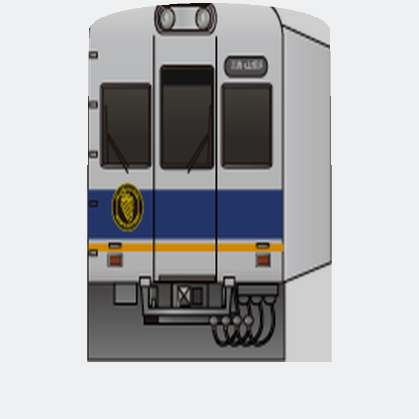
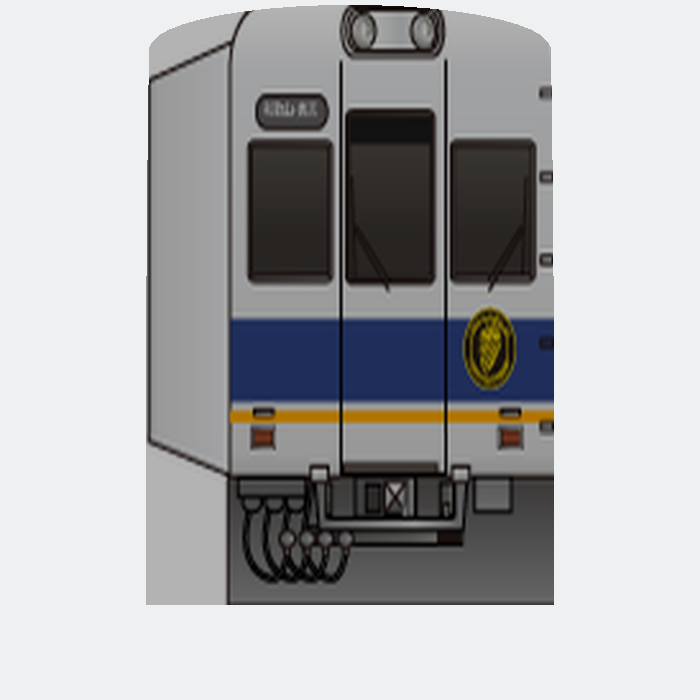
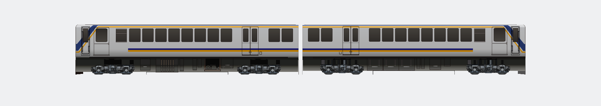

映射线路：貴志川線。删除提交：d9afe58a；重建提交：1dfa0cf0。
整车已删了重做：从图纸 wakayama_2270.pdf 从头重建。重建时对着实车照片（2702/2272 南海カラー正脸）逐件核对了司机端翻法——实车前照灯在最上端（行先表示板上方）、行先表示板在风挡上方、风挡居中、蓝带在风挡下方、尾灯在最下端、车钩在底；原图纸前件按“图上正立”贴出来是上下颠倒的，所以两头司机端件这次都翻过来了，贯通端没动。
页面上的图是从重建后的新模型直接渲的：car1 司机端正脸、car2 司机端正脸、整列侧面、斜视角、三维形态图。


